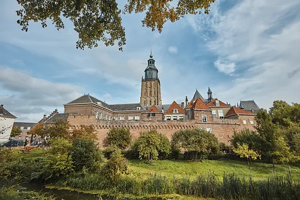
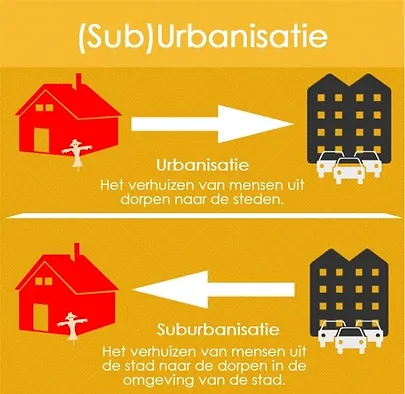
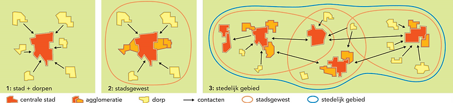
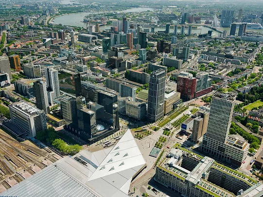
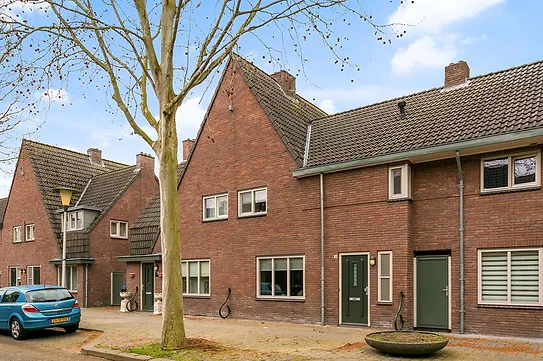
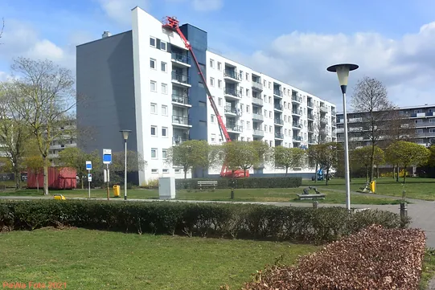
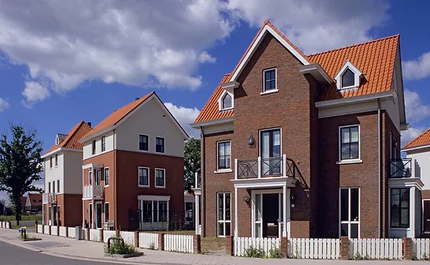
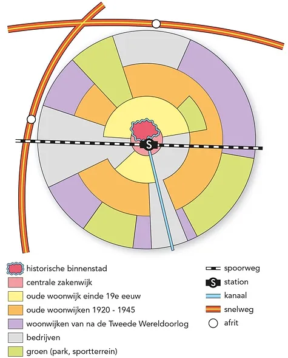

Geschiedenis van steden
Veel mensen denken bij het beeld van een stad aan stadsmuren, hoogbouw en heel veel mensen. Maar klopt dit beeld? Hebben alle steden in de wereld een stadsmuur en wonen in elke stad wel veel mensen?
Over de stadsmuur kunnen we snel duidelijkheid geven: Natuurlijk zijn er veel steden met hele mooie stadsmuren! Máár het is niet meer zo dat je bij het naderen van een stad als eerste de stadsmuren ziet. Dit is echt iets van de middeleeuwen. Maar er zijn ook veel steden zonder enige vorm van stadsmuur.
Figuur 1: de stadsmuur van Zutphen.
In Almere, een stad met meer dan 200.000 inwoners in Nederland, ga je geen stadsmuur aantreffen. Maar ook een stad als Guangzhou in China met meer dan 10 miljoen inwoners heeft geen stadsmuren. Dit heeft te maken het feit dat dit relatief jonge steden zijn en dus niet in de middeleeuwen zijn gesticht.
Tot aan de de Middeleeuwen waren er relatief weinig steden. Pas rond het jaar 1000 kwam daar verandering in. Er vormden zich sinds die tijd steeds meer steden. In de periode 1100-1400 werd de basis gelegd voor ons huidige stedenpatroon. Overal in het land ontstonden nieuwe steden. Steden ontstonden vaak rondom een economische kern met een eigen bestuur, een markt en vaak een haven. Voor het ontstaan van een stad speelde de infrastructuur over water een cruciale rol. Nieuwe steden ontstonden op locaties die aantrekkelijk waren voor de handel, aan een grote rivier of een zeearm.
Steden ontwikkelden zich vaak rond één of meerdere centrale plaatsen. Dit was vaak de locatie van een oude kern van een vroegere nederzetting (dorp) met een kerk, een marktplaats of een waterloop die als haven zou gaan dienen. Hieromheen werden huizen, monumentale kerken en verdedigingswerken zoals poorten, stadsvesten en wallen gebouwd. Sommige steden ontstonden door het samenvoegen of uitgroeien van oudere nederzettingen.
Europese steden hadden meestal een inwoneraantal van 2.500 tot 20.000 inwoners. Grotere steden waren Genua (Italië) en Londen (Verenigd Koninkrijk) met ongeveer 50.000 inwoners.
De grootste steden waren Milaan, Venetië (Italië) en Parijs (Frankrijk) die ongeveer 100.000 inwoners telden. In de twaalfde eeuw was Parijs een verzameling kastelen, kerken en kloosters waartussen duizenden grote en kleine huizen waren gebouwd.
Urbanisatie
Tijdens de industriële revolutie in de negentiende eeuw verhuisden steeds meer mensen van het platteland naar de steden. Dit noemen we urbanisatie. In de steden kwamen namelijk fabrieken te staan waardoor er een grote vraag naar arbeiders kwam. Veel mensen trekken van het platteland naar de stad. Omdat dan nog vrijwel niemand een auto bezit, moeten mensen dicht bij hun werk wonen.
In de steden ontstond echter armoede, criminaliteit, kinderarbeid en vervuiling, omdat de woningen van slechte kwaliteit waren. Er waren echter ook positieve ontwikkelingen. Aan het eind van de negentiende eeuw kwam er riolering. Ook werden er ziekenhuizen en scholen gebouwd. In de twintigste eeuw ontstonden in de steden door nieuwe bouwtechnieken grotere gebouwen.
Figuur 2: (sub)urbanisatie
Na de Tweede Wereldoorlog gingen de steden steeds verder groeien, omdat het economisch weer goed ging en doordat er veel kinderen werden geboren. Door de grote trek naar de stad ontstonden er ook grote verschillen in inkomen. Ook nam het autobezit van mensen toe waardoor de rijkere mensen, vooral jonge gezinnen met kinderen, de steden verlieten om in een huis rondom de stad te gaan wonen. Deze huizen, rondom de stad, hadden vaak een tuin en voldoende speelruimte voor kinderen. Daarnaast had men daar ook voldoende parkeergelegenheid voor auto's. De meeste mensen hielden echter wel hun baan in de grote stad waardoor het fenomeen de forens ontstond. Forenzen zijn mensen die dagelijks naar hun werk reizen. In deze tijd ontstonden ook de eerste files.
De trek uit de stad naar de omliggende gemeenten wordt ook wel suburbanisatie genoemd. De woonkernen aan de rand van de stad waar deze mensen naar toe gingen verhuizen noem je suburbs. Daardoor groeien de dorpen nabij de grote steden snel. De steden veranderen in agglomeraties.
Steden kregen in de vorige eeuw een steeds belangrijkere rol in de omgeving. Voorzieningen die in steden voorkomen hebben vaak een groot verzorgingsgebied. Dat is het gebied waaruit de klanten van een voorziening vandaan komen. Een groot verzorgingsgebied betekent dus dat mensen vanuit een groot gebied van voorzieningen zoals warenhuizen, bioscopen, ziekenhuizen etc. gebruik maken. Hierdoor kwam er ook meer samenwerking tussen steden om gezamenlijke problemen aan te pakken zoals werkgelegenheid, criminaliteit en verkeersproblematiek (congestie). Doordat steden meer aan elkaar gingen groeien en steeds meer met elkaar gingen samenwerken ontstonden stedelijke zones. Een voorbeeld hiervan is de Randstad. Binnen de Randstad werken veel steden samen.
Als je kijkt naar de opbouw van een westerse stad kun je stellen dat deze
meestal bestaat uit een oude kern. In bijzijn van deze oude kern ligt vaak het
CBD (Central Business District). In veel westerse steden hebben ze in het
verleden een gedeelte van de oude stad afgebroken om plaats te maken
voor grote winkelcentra met kantoren en uitgaansvoorzieningen.
Denk maar eens aan het centrum van Eindhoven met veel hoogbouw, kantoren
en winkels.
Rondom de oude kern liggen vaak de oude woonwijken. In deze wijken staan
de oude arbeiderswoningen en daarin wonen momenteel vaak de minder rijke
mensen die niet de financiële middelen hebben om te verhuizen. Deze wijken
hebben vaak smalle straten met weinig groen. Tegenwoordig proberen veel
steden deze oude woonwijken op te knappen en te verbeteren zodat ze weer
aantrekkelijk zijn om in te wonen.
Iets verder van het stadscentrum kwamen de wijken met veel rijtjeswoningen
maar ook hoogbouw. Deze wijken zijn gebouwd na de Tweede Wereldoorlog.
Er was toen een woningtekort en er moesten toen snel en vooral veel woningen
worden gebouwd.
Aan de rand van de steden liggen de jongste woonwijken, de suburbs. Er is een
afwisseling tussen kleinere en grotere woningen, maar ze hebben allemaal veel
groen in de omgeving. Speelpleinen, parkeerplaatsen en parken zijn in deze
wijken te vinden.
Men heeft altijd geprobeerd om industriegebieden buiten de stad plaatsen maar
doordat steden bleven groeien is er vaak om de industriegebieden heen
gebouwd met als gevolg dat je midden in een stad haven en/of
industriegebieden tegen kunt komen.
Bij veel westerse steden kom je meestal wel enige vorm van planning tegen.
Deze steden hebben in het verleden ook te maken gehad met enorme
urbanisatie, maar men heeft altijd geprobeerd dit met planning in goede banen
te leiden. In de westerse wereld zijn de steden in de laatste decennia vooral
sterk veranderd door suburbanisatie. De oude plattelandsdorpjes werden als
het ware betrokken bij de stad en groeiden vaak uit tot nieuwe steden of
groeiden weer aan de stad vast (suburbs). Vooral de mensen met een hoger
inkomen konden het voor elkaar krijgen om te verhuizen naar de vaak groenere
suburbs waar ook meer ruimte was.
Figuur 4: CBD van Rotterdam
Figuur 5: voormalige arbeiderswoningen in Helmond
Figuur 6: portiekflats in Helmond-Oost.
Figuur 7: suburb Brandevoort
Figuur 8: model van een Nederlandse stad